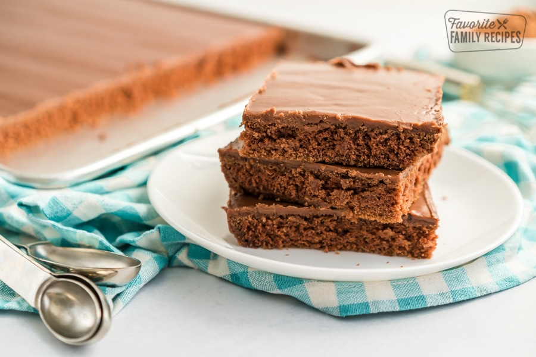

Texas Sheet Cake

Description
Texas sheet cake is a delectable and iconic dessert that captures the heart and soul of Southern comfort. This indulgent treat starts with a rich, moist chocolate cake layer, baked in a large sheet pan to create a thin, tender base. While still warm from the oven, the cake is lavishly coated with a luscious layer of glossy chocolate fudge icing that melts and melds into the cake's surface. The result is an irresistible symphony of flavors and textures—deep cocoa notes mingling with the sweet creaminess of the icing. A beloved classic, Texas sheet cake is both a testament to the Lone Star state's culinary heritage and a universal celebration of simple, irresistible decadence.
Ingredients
For the Cake:
- 2 cups all-purpose flour
- 2 cups granulated sugar
- 1 teaspoon baking soda
- 1/4 teaspoon salt
- 1 cup unsalted butter
- 1 cup water
- 1/4 cup cocoa powder
- 2 large eggs
- 1/2 cup buttermilk
- 1 teaspoon vanilla extract
For the Icing:
- 1/2 cup unsalted butter
- 1/4 cup cocoa powder
- 1/4 cup milk
- 1 teaspoon vanilla extract
- 3 cups powdered sugar
Steps
For the Cake:
- Preheat your oven to 350°F (175°C) and grease a 13x18-inch sheet pan.
- In a large mixing bowl, whisk together the flour, sugar, baking soda, and salt.
- In a saucepan, combine the butter, water, and cocoa powder. Bring to a boil, stirring constantly, and then remove from heat.
- Pour the hot cocoa mixture over the dry ingredients and whisk until well combined.
- In a separate bowl, beat the eggs, buttermilk, and vanilla extract. Add this mixture to the batter and mix until smooth.
- Pour the batter into the prepared sheet pan and spread it evenly.
- Bake in the preheated oven for about 20-25 minutes, or until a toothpick inserted into the center comes out clean.
For the Icing:
- In a saucepan, melt the butter over medium heat. Stir in the cocoa powder and milk, and bring to a boil.
- Remove the saucepan from heat and stir in the vanilla extract and powdered sugar until smooth.
Assembly:
- While the cake is still warm, immediately pour the warm icing over the cake.
- Use a spatula to spread the icing evenly over the cake, making sure to cover the entire surface.
- Allow the cake to cool and the icing to set before slicing and serving.
Note: You can customize your Texas Sheet Cake by adding chopped nuts, such as pecans or walnuts, to the icing or sprinkling them on top before the icing sets.